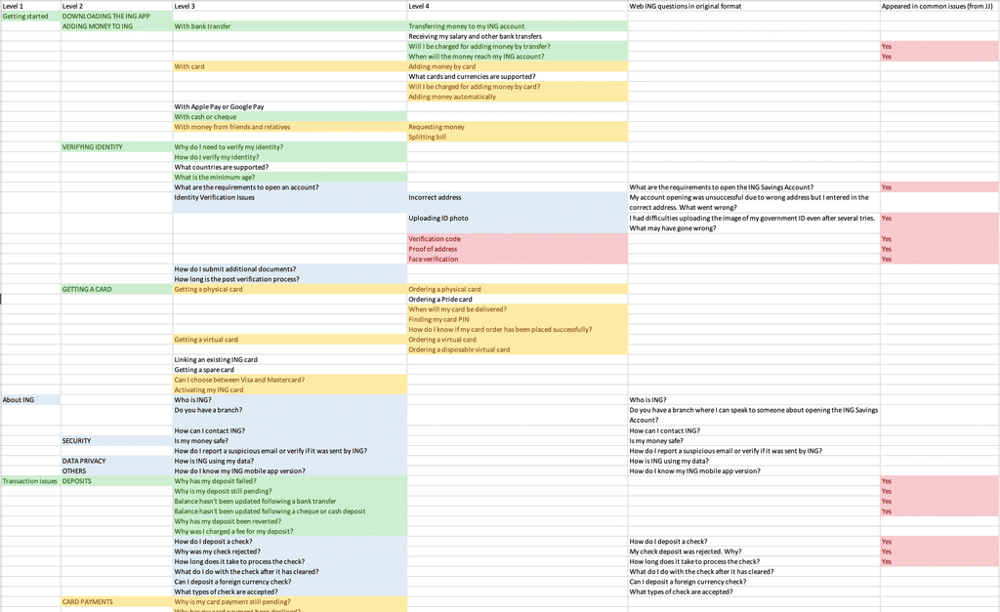
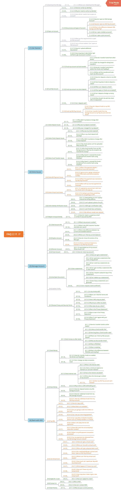

ING Help Center
Making ING's support experience a differentiator
ING Philippines' has two 24/7-customer service channels.
First is In-app Messages. This functions a lot like emails or SMS messages where customers can send a message and can come back to it later. These in-app messages are usually responded to within 24 hours.
The second channel is Live Chat. This is the channel for urgent concerns where customers can get the help of a customer care agent to resolve their issues.
The problem with Live Chat is customers often wait ~10 minutes (or more) to talk to a customer care agent. This wait is a very unpleasant experience, especially if you have an urgent issue that is time-critical, like reporting fraudulent or unauthorized transactions.
Another problem is that reaching out via Live Chat became the preferred channel. This happened because customers were often unable to find solutions in the FAQ or in the website. And, since there is no prioritization functionality in the chat, a lot of the "trivial" queries sent through the Live Chat occupied customer agents' time and effort.
Jobs To Be Done
- Primary: When a user with an issue contacts support, I want to address their issue as fast as possible so that they can get back to doing whatever they need to get done.
- Secondary: When a user contacts the bank about an issue, I want the experience to be pleasant and seamless so that they feel that they are taken care of by ING.
Guiding Principles
- Provide support as fast as possible: Customers should not be spending too much time waiting for an answer.
- Provide correct and helpful answers the first time: We don't want customers repeatedly coming back for the same issue. As much as possible, we want to solve it the first time around.
- Minimize the time it takes to provide a solution: We want to resolve the issue as fast as possible. If the issue has no true solution, we try to alleviate the customer's concern.
Issues
- Frequently Asked Questions (FAQs) are not easily accessible: 11 out of 12 interviewed customers said they'd look at self-service first, but in the app they barely used it due to poor placement and contrast.
- Self-service content and structure are not updated: Created by Marketing years ago and not updated since launch. Differs from website content.
- Chat transcripts not saved: Agents had to manually copy transcripts, adding 2-3 minutes to handling time.
- Agents can only talk to one customer at a time: Technical limitation causing queues.
- "Active waiting": Customers had to keep the app open to stay connected.
Solutions
We prioritized solutions based on impact, effort, and level of change.
Make FAQs more accessible
I redesigned the FAQs to be the first touchpoint for customers looking to get support. This way, customers are encouraged to look for answers to their issues first before contacting support.

Improve Help content and structure
We studied how different apps and digital banks structure their help sections (Grab, Citibank, Revolut) and analyzed our current content to restructure it effectively.
Add chat history
Allowed customers to view past chats and agents to see context without navigating away. Reduced after-chat work by ~1 hour per day per agent.
Make the chat asynchronous
Eliminated "active waiting time". Customers can send messages without waiting for an agent connection.
Add a chatbot
Surfaces relevant FAQs in the chat conversation. Prioritizes urgent issues (like fraud) over trivial ones.
Key Learnings
- Having product analytics would have allowed us to measure early if we were on the right track.
- Sitting beside the customer care team is one of the fastest ways to learn about gaps.
- Collaborate with designers, engineers, and product stakeholders early and often.
- Test early and often with customers, especially for high-effort features.
- Micro-interactions are extremely helpful in communicating small, important nuances.
- For customer support features, it's important that the experience is fast and the communication is clear.